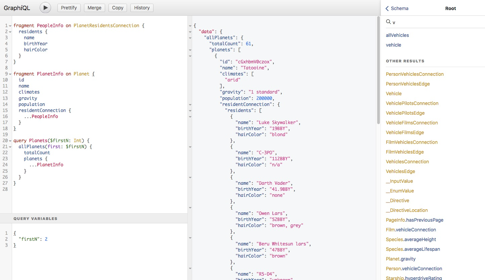
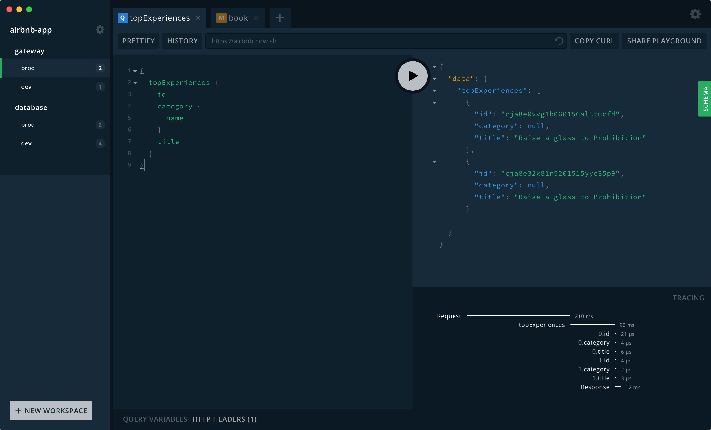
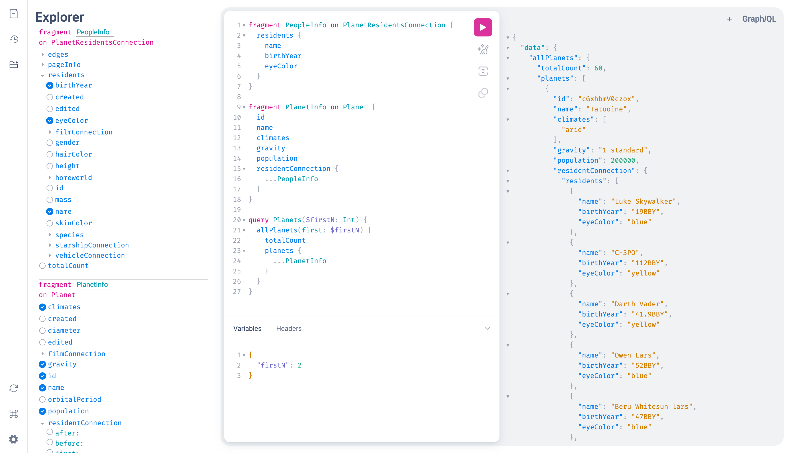
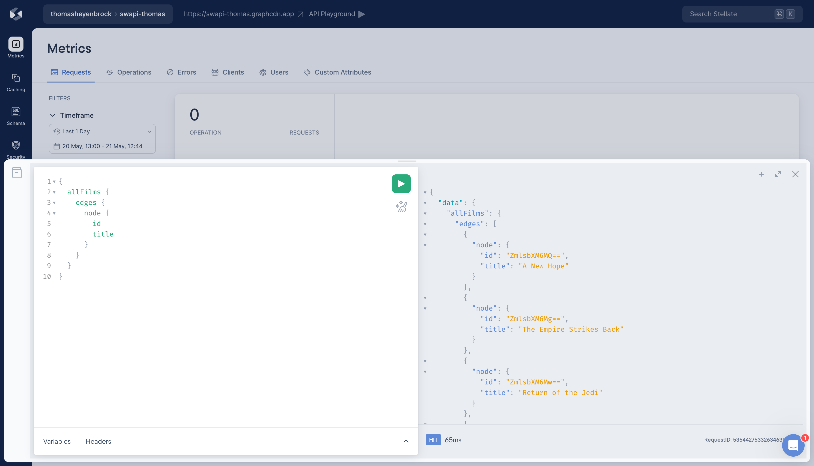

Published on
There's no denying the incredible impact of GraphiQL on the GraphQL ecosystem. From the inception of GraphQL, GraphiQL allowed developers to explore GraphQL right from their browser, a game-changer for developer productivity and a core driver for the adoption and success of GraphQL.
The simple, lean, and user-friendly interface of GraphiQL helped developers learn GraphQL. It had built-in schema documentation, editor auto-completion, and a split view where you write your GraphQL operation on the left and see its result on the right. This made GraphQL intuitive and enabled engineers to rapidly develop a mental model for understanding it.
Over the years, GraphQL gained more traction, its ecosystem grew, and the developers who used GraphiQL to learn GraphQL became power users.
However, GraphiQL stayed pretty much the same, with only minor changes to adapt to the evolving GraphQL specification.
Other IDEs became popular that supported a wider range of use cases, the most notable being the GraphQL Playground. It featured tabs, allowed exploring the schema through SDL, supported customization options, and had a more modern design. It was so successful that it was eventually handed over to the GraphQL Foundation.
That kicked of a process of modernizing GraphiQL, making it a true reference implementation of GraphQL IDEs. As part of Stellate's commitment to the growth of the GraphQL ecosystem, I had the opportunity of using my working hours to lead this effort, working together with other GraphiQL maintainers such as Rikki, Jonathan, and Dimitri.
The most obvious things to improve were the design and layout of GraphiQL.
For the redesign, we introduced a new color palette, including a dark mode. Color contrasts and font sizes were chosen to improve legibility.
The layout was changed to be more in line with common IDE layouts, like VSCode or other code editors. A sidebar was introduced at the left side of the screen, which can expand into a plugin pane. This is where schema documentation and operation history were moved. The split view with a query editor on the left and a result view on the right remained in place.
Perhaps one of the most exciting features of GraphiQL v2 is its plugin system. The plugin pane mentioned above is able to host custom plugins, a list of which can be specified by the host of the GraphiQL instance. These plugins can offer additional functionality by rendering their own UI and being able to hook into the overall state of GraphiQL.
Internally, we achieve this by breaking up the monolithic application
structure of GraphiQL v1 into reusable building blocks. We bundled those
in a new NPM package called @graphiql/react, which exposes
common UI primitives (e.g. a Button component), stateful
chunks of the GraphiQL UI (e.g. a QueryEditor component), and
the underlying React Context providers and consumers to read from and
modify the internal state of GraphiQL.
A great example for such a plugin is the GraphiQL Explorer. This plugin was already popular with GraphiQL v1 and allows users to visually build queries by selecting fields and operations from a menu. However, instead of having to wrap the GraphiQL UI (what the plugin did for GraphiQL v1), in v2 the GraphQL Explorer plugin is directly integrated into the IDE, improving the overall IDE layout.

The creation of @graphiql/react had one more benefit: It now
allows everybody to create their own GraphQL IDE with ease. Simply take
the building blocks, arranging them in a different order, and add or
remove the parts you (don't) need.
This allowed us GraphiQL maintainers to have the best of both worlds: Provide a sustainable reference implementation and allowing users to implement their specific use-cases without having to build everything first-class into GraphiQL.
Here at Stellate, we made use of this and created a lean version of GraphiQL that is integrated into our dashboard, which adds information specific to our product like the cache status of the request.
GraphiQL v2 was released as only the second major version of GraphiQL in August 2022, exactly 7 years after the inception of GraphiQL. It was a significant leap forward, and since its release, it has seen widespread adoption in most major GraphQL server frameworks.
Of course, the journey doesn't end there. We are exploring further improvements, like integrating Monaco, the code editor that powers VS Code, to provide a more familiar editing experience and better accessibility. Also expanding the plugin system is something we have in mind.
In conclusion, GraphiQL v2 represents a new era of GraphQL IDEs, offering more flexibility, customizability, and an improved user experience. The future of GraphQL IDEs is here, and we can't wait to see what developers worldwide will create with these new capabilities.